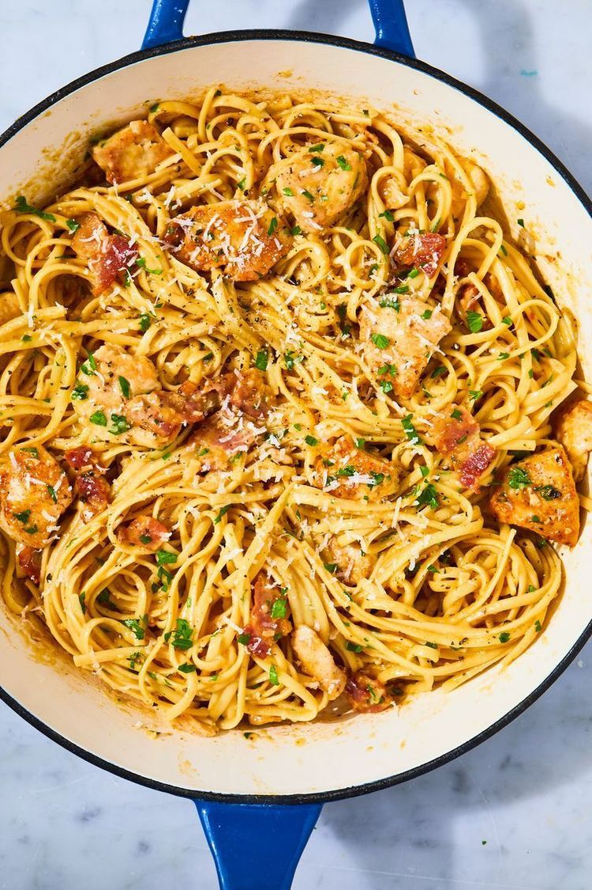

Receita de Carbonara

Ingredientes
200 g espaguete (ou outra massa longa de grano duro)
½ xícara (chá) de bacon em cubos (75 g)
¼ de xícara (chá) de vinho branco
2 ovos
2 gemas
½ xícara (chá) de queijo parmesão ralado
sal e pimenta-do-reino moída na hora a gosto
Modo de preparo
Leve uma panela média com 2 litros de água ao fogo alto. Quando ferver, adicione 1 colher (sopa) de sal, junte o macarrão e misture. Deixe cozinhar, pelo tempo indicado na embalagem ou até ficar al dente.
Enquanto o macarrão cozinha, prepare os outros ingredientes. Numa tigela pequena quebre um ovo de cada vez e transfira para outra tigela (lembre-se: são 2 ovos inteiros e 2 gemas; você pode reservar as claras na geladeira por dois dias ou, melhor ainda, congelar para usar depois).
Junte o queijo parmesão ralado e bata bem com um garfo para misturar.
Leve uma frigideira grande ao fogo médio. Quando aquecer, doure o bacon por cerca de 5 minutos, mexendo de vez em quando. Diminua o fogo, regue o vinho branco, com cuidado para não espirrar, misture bem e desligue o fogo.
Assim que o macarrão estiver cozido, reserve 1 xícara (chá) da água do cozimento.
Agora você vai precisar fazer tudo bem rapidinho: escorra a água, transfira o macarrão para a frigideira com o bacon quente, junte os ovos e misture bem – a ideia é que o calor da massa cozinhe os ovos, formando um creme.
Volte a frigideira ao fogo bem baixinho e vá adicionando a água do cozimento reservada aos poucos, mexendo com uma espátula por alguns minutinhos até formar um molho espesso.
Cuidado para não cozinhar demais os ovos. Sirva a seguir com pimenta-do-reino a gosto.